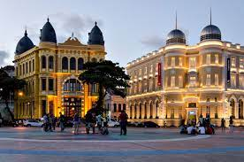

Bem-vindo(a) a Conheça Recife
Marco Zero
O bairro do Recife, no centro da cidade, foi escolhido para crescer quando os europeus chegaram por aqui. É famoso por ser o bairro mais antigo da cidade e começou a ficar maior por volta de 1630, quando os holandeses chegaram. Isso continuou mesmo depois dos portugueses retomarem as terras. Às vezes, o bairro ficava bem cheio de gente. Em 1910, o bairro mudou de novo. Eles modernizaram o porto e construíram prédios novos, derrubando dois terços do bairro antigo. A Praça do Marco Zero, no meio desse bairro, mostra tudo isso. Tem monumentos históricos importantes por perto.
O Marco Zero de Recife ficou debaixo d'água até o século 18 porque era a entrada pelo mar. Mas em 1938, eles oficialmente inauguraram o Marco Zero. Nos anos 1990, reformaram a área portuária, tirando parte das plantas e construindo prédios novos.Eles também mudaram o chão, e agora o Marco Zero fica no meio de uma rosa dos ventos gigante, feita pelo Cícero Dias. Isso o tornou um símbolo do começo das estradas de Pernambuco e deixou a região mais valorizada. Ao redor, tem prédios antigos importantes, como a Bolsa de Valores e a Associação Comercial do Recife, o que faz o bairro ser legal para turistas e moradores. Com o tempo, o Marco Zero de Recife não virou só um cartão de visita, mas também um lugar de encontro da galera. Eles fazem muitos shows lá, como o Ano-Novo, com luzes e apresentações, além do simbolismo.